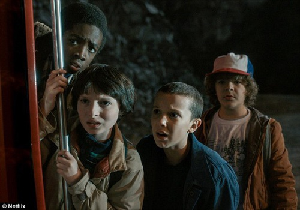
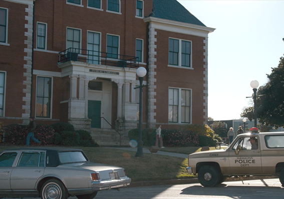
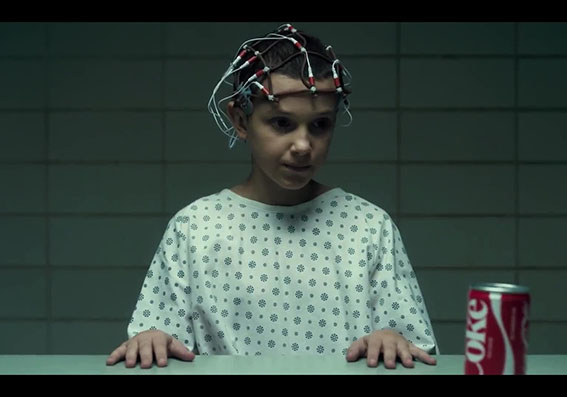
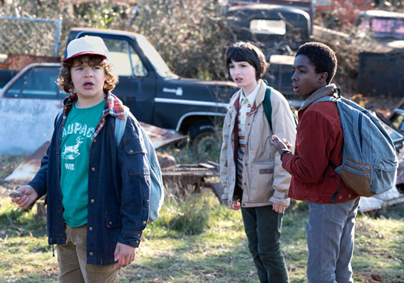
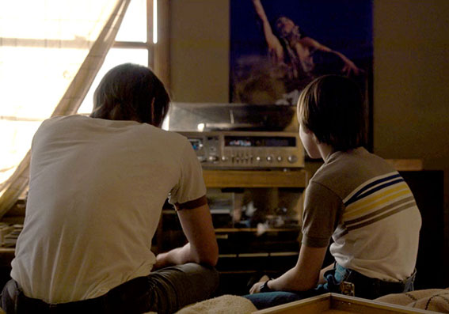

Connais-tu bien Stranger Things ?

1. Stranger Things est une série :
Américaine
Anglaise
Française

2. Dans quelle ville de l'Indiana se déroule l'histoire ?
Fishers
Hawkins
Anderson

3. Quelle jeune actrice incarne le personnage d'Eleven ?
Maisie Williams
Natalia Dyer
Millie Bobby Brown
4. Comment les enfants surnomment-ils le monstre
du monde à l'envers ?
Thessalhydra
Demogorgon
Troglodyte

5. Quels sont les prénoms des 3 amis de Will ?
Jack
Mike
Tom
Dustin
Lucas
Steve

6. Quelle musique culte des 80's Jonathan fait-il découvrir
à son petit frère Will dans un flashback de lépisode 2 ?
Should I stay or should I go
She has funny cars
I melt with you
7. Quelle est la marque des gauffres préférées d'Eleven ?
8. Quel est le prénom de la mère de Will ?
Charlie
Joyce
Maria
9. Les principales influences des créateurs de la séries viennent de :
Tim Burton et Edgar Allan Poe
Pedro Almodovar
Stephen King et Steven Spielberg
10. De quoi est passionné Jonathan, le frère de Will ?
de photographie
de cinéma
de danse